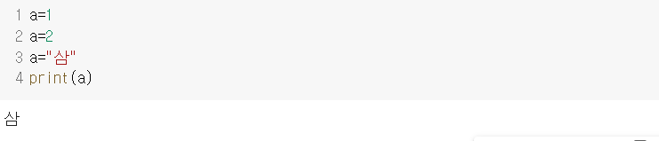

변수란 숫자, 문자(열), 리스트 등의 자료를 저장하는 기억장소의 이름입니다.
쉽게 말해
a, b, c 모두 변수입니다.
위의 사진처럼 변수는 이름을 정하고 등호를 사용하여 값을 저장하면 됩니다.
이때 = 연산자는 같다는 의미가 아니라 변수에 값을 저장한다는 의미입니다.
이때 자동으로 자료형이 결정됩니다.
변수에 저장된 값은 변수의 이름을 활용하여 사용하고 저장된 값은 변경이 가능합니다.
변수명은 규칙에 맞게 작성해야 합니다.
변수는 어떤 데이터든지 저장 가능합니다.
동일한 변수에 다른 데이터를 저장할 수 있는데 그렇게 된다면 마지막에 저장한 값이 최종적으로 변수에 저장된 값이 됩니다.
